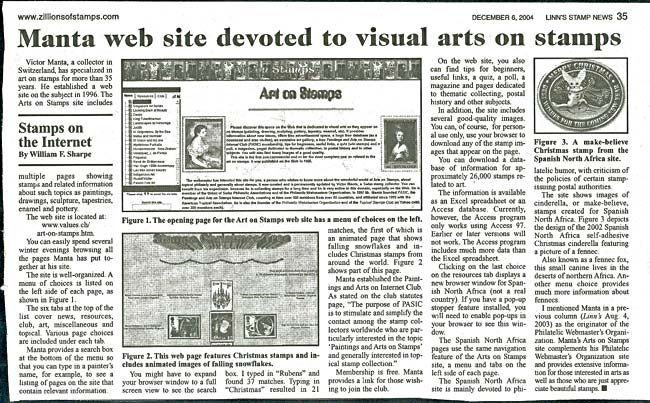

Started
in 1999. 34th Edition, Jan. 2020
In October 2020 the Paintings and Arts on Stamps Internet
Site, the first art on stamps site on the Internet, will commemorate its 15th
anniversary. Congratulation to all Paintings and Arts on Stamps Internet
Club (PASIC) members and many thanks to all our visitors! Here are several
comments, coming from over the world:
The number of Paintings and Arts on Stamps Internet Club members, coming
from over 80 countries, has grown to over 800.
It became one of the largest philatelic clubs worldwide.
The site covers such interesting subjects as:
Madonnas on UK stamps, Leonardo's 500th Death Anniversary, Nudes by the Romanian artist N. Grigorescu, modern Iceland art, and many others.
In May 2010 we have extended the usage of our principal asset,
the free Art on Stamps database. Thanks to Roy Berliner from the USA,
who updated the database in May 2010,
we list in the database over 30,000
stamps and nearly 3,300
miniature sheets. A new version will be published soon - stay tuned!
Thanks to Pieter Broekema we are offering access to all Rembrandt related stamps that appeared between
1930 and 2020. Thank you,
Pieter!
The on-line database (Resources tab) is functional
and running.
Don't hesitate to take two interesting polls on art on stamps and compare
your preferences to those of other visitors. For more information please
click the links listed under the Resources tab, in the menu Take a Poll
on...).
May I remind you an interesting article about this site, signed by Bill
Sharpe, that appeared on a half of a page in the December 2004 edition
of the prestigious philatelic magazine Linn's. Click here
to read it.

I would like to thank all PASIC members and to all visitors of the Paintings
and Arts on Stamps Internet Site for their interest, fidelity and encouragements
(some of them have been published under the Misc tab, Feedback Received).
Victor Manta
Philatelic Web Publisher, PWO
We encourage all stamps collectors interested in Arts
on Stamps to join us at PASIC, in order to make our hobby even more interesting
and joyful for them and for all of us. To join us on-line, for free (no
hidden costs ever), please click on this button: